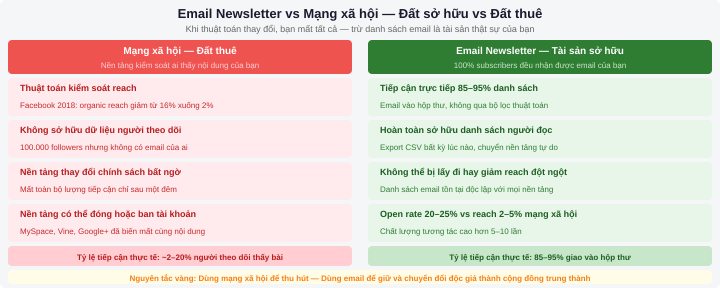
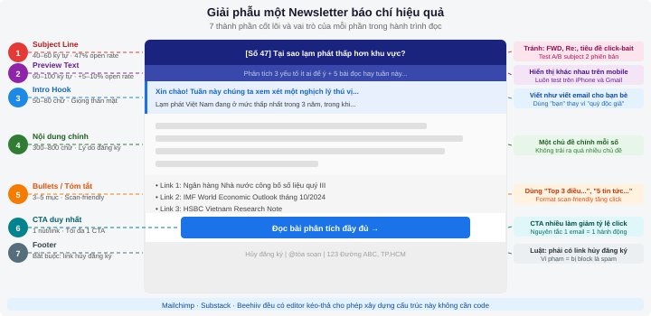
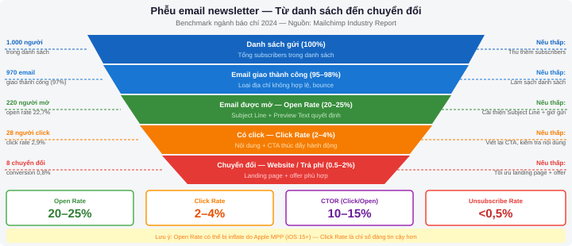

Newsletter & Email Marketing
Sau chương này, sinh viên có thể:
- Giải thích tại sao email newsletter vẫn mạnh mẽ trong thời đại mạng xã hội
- Xây dựng và phát triển danh sách người đăng ký email một cách đạo đức
- Thiết kế và viết một newsletter báo chí hiệu quả
- Phân tích hiệu suất chiến dịch email và tối ưu hóa dựa trên dữ liệu
10.1 Tại sao email newsletter vẫn mạnh mẽ?
Vào năm 2024, khi TikTok thống trị màn hình điện thoại và Threads của Meta mới ra mắt được một năm, nhiều người cho rằng email là công nghệ lỗi thời của thế kỷ trước. Thực tế lại hoàn toàn ngược lại: email newsletter đang trải qua thời kỳ phục hưng mạnh mẽ nhất trong hai thập kỷ qua, và các tòa soạn báo chí nghiêm túc đang đổ nguồn lực đáng kể vào kênh này. Để hiểu tại sao, chúng ta cần xem xét một sự khác biệt căn bản.
Email vs Mạng xã hội: Bạn sở hữu gì?
Khi bạn xây dựng 100.000 người theo dõi trên Facebook, bạn không thực sự "sở hữu" con số đó. Thuật toán Facebook quyết định bao nhiêu phần trăm trong số họ nhìn thấy bài đăng của bạn. Năm 2014, organic reach (lượt tiếp cận tự nhiên không trả tiền) của Facebook Pages đột ngột giảm từ 16% xuống còn dưới 6%. Nhiều tờ báo mất hàng triệu độc giả qua đêm — mà không có cách nào liên hệ lại vì họ không có thông tin liên lạc của những người theo dõi đó.
Danh sách email thì khác. Đây là tài sản bạn thực sự sở hữu: không nền tảng nào có thể lấy đi, không thuật toán nào kiểm soát ai nhận được email của bạn. Bạn có thể chuyển toàn bộ danh sách sang nhà cung cấp khác bất cứ lúc nào. Đây là lý do các chuyên gia truyền thông dùng câu: "Đừng xây nhà trên đất thuê."
Số liệu so sánh
| Chỉ số | Email Newsletter | Facebook (organic) | Twitter/X (organic) | Instagram (organic) |
|---|---|---|---|---|
| Tỷ lệ tiếp cận trung bình | ~85–95% giao vào hộp thư | ~2–5% người theo dõi | ~5–15% người theo dõi | ~10–20% người theo dõi |
| Open rate trung bình | ~20–25% (media & báo chí) | N/A | N/A | N/A |
| Click-through rate | ~2–4% | ~0.1–0.5% | ~0.5–1% | ~0.2–0.5% |
| Quyền sở hữu dữ liệu | Hoàn toàn của bạn | Facebook sở hữu | X Corp sở hữu | Meta sở hữu |
Nguồn: Mailchimp Industry Benchmarks 2024, Hootsuite Digital Report 2024. Số liệu tỷ lệ tiếp cận email cao hơn so với open rate vì email được giao vào hộp thư ngay cả khi không được mở.

Khi độc giả đăng ký newsletter, họ đang trao cho bạn thứ quý giá nhất trong thế giới thông tin bão hòa: sự tin tưởng có chủ đích. Họ chủ động mời bạn vào hộp thư — không gian riêng tư nhất trong đời sống số. Tỷ lệ chuyển đổi (độc giả thành subscriber trả phí) từ email thường cao gấp 3–5 lần so với mạng xã hội.
Các newsletter báo chí thành công
Morning Brew (Mỹ) bắt đầu năm 2015 như một newsletter kinh doanh đơn giản dành cho sinh viên đại học, đạt 4 triệu subscriber vào 2020 và được mua lại với giá 75 triệu USD. Thành công của Morning Brew đến từ giọng văn trẻ trung, dí dỏm — trái ngược hoàn toàn với phong cách khô khan của báo kinh tế truyền thống.
Axios xây dựng toàn bộ mô hình kinh doanh xung quanh newsletter định dạng "smart brevity" — mỗi tin được cấu trúc với: Why it matters (Tại sao quan trọng), The big picture (Bức tranh lớn), và Go deeper (Đọc thêm). Axios đạt doanh thu 100 triệu USD năm 2023 chủ yếu từ newsletter và sponsorship.
Tại Việt Nam, xu hướng newsletter đang nổi lên với các ví dụ như Vietcetera (newsletter về kinh doanh và văn hóa), các newsletter nội bộ của tòa soạn lớn, và ngày càng nhiều nhà báo freelance xây dựng cộng đồng riêng trên Substack. Nền tảng này đặc biệt phù hợp với nhà báo có thương hiệu cá nhân mạnh muốn kiếm thu nhập trực tiếp từ độc giả.
10.2 Các nền tảng newsletter
Ba nền tảng phổ biến nhất cho nhà báo có đặc điểm và mô hình kinh doanh khác nhau rõ rệt. Hiểu rõ sự khác biệt này giúp bạn chọn đúng công cụ cho mục tiêu cụ thể của mình.
| Tiêu chí | Mailchimp | Substack | Beehiiv |
|---|---|---|---|
| Gói miễn phí | Đến 500 subscribers, 1.000 emails/tháng | Miễn phí hoàn toàn (trừ khi dùng subscription trả phí) | Đến 2.500 subscribers |
| Chi phí khi tăng trưởng | $13/tháng (500–1.500 sub), tăng theo sub | 10% hoa hồng trên doanh thu subscription | $39/tháng (Scale plan, không giới hạn sub) |
| Mô hình kiếm tiền | Không tích hợp, dùng link ngoài | Tích hợp thanh toán subscription (Stripe) | Subscription + Boosts (giới thiệu subscriber trả phí) |
| Thiết kế template | Rất đa dạng, drag-and-drop editor | Đơn giản, tập trung vào chữ | Hiện đại, tùy chỉnh cao |
| Analytics | Đầy đủ: open rate, click, geography | Cơ bản: open rate, click | Chi tiết nhất: funnel, referral tracking |
| SEO & Web | Trang lưu trữ cơ bản | Trang web đầy đủ, SEO tốt | Trang web đầy đủ, tối ưu SEO |
| Phù hợp nhất cho | Tòa soạn, tổ chức, cần thiết kế linh hoạt | Nhà báo cá nhân muốn subscription trả phí | Người tập trung tăng trưởng subscriber nhanh |
Mới bắt đầu (0–500 subscribers): Dùng Mailchimp Free hoặc Beehiiv Free — không mất tiền, học được cách viết và gửi newsletter.
Muốn kiếm tiền từ nội dung: Substack — cộng đồng tác giả lớn, dễ được discover bởi subscriber mới.
Muốn tăng trưởng nhanh: Beehiiv — hệ thống referral và "Boosts" giúp tăng subscriber rất hiệu quả.
10.3 Xây dựng danh sách người đăng ký
GDPR và đạo đức thu thập email
Trước khi nói đến kỹ thuật tăng subscribers, cần hiểu rõ nguyên tắc đạo đức và pháp lý. Quy định GDPR của EU (có hiệu lực từ 2018) và nhiều luật bảo vệ dữ liệu tương tự trên thế giới đều yêu cầu: mọi người phải chủ động đồng ý nhận email từ bạn (opt-in), không thể điền sẵn ô "Tôi đồng ý" hay tự động thêm email từ danh thiếp.
Nguyên tắc double opt-in — người đăng ký nhận email xác nhận và phải nhấn một lần nữa — tuy làm giảm số lượng subscriber nhưng đảm bảo danh sách chất lượng cao hơn: những người thực sự muốn đọc nội dung của bạn. Danh sách chất lượng cao sẽ có open rate tốt hơn và ít bị đánh dấu spam hơn, bảo vệ uy tín domain gửi email của bạn lâu dài.
Mua danh sách email — dù từ nguồn nào — là sai lầm nghiêm trọng: vi phạm GDPR và nhiều luật spam quốc tế, làm hỏng uy tín domain gửi (khiến email vào spam), và tạo ra những người nhận không hề muốn nghe từ bạn. Spam rate cao sẽ khiến Mailchimp/các nền tảng đình chỉ tài khoản của bạn.
Lead Magnets: Nội dung độc quyền đổi lấy email
Lead magnet là nội dung giá trị cao được cung cấp miễn phí để đổi lấy địa chỉ email. Đây là cách hiệu quả nhất để tăng subscribers vì người dùng có lý do rõ ràng để đăng ký.
Các lead magnet hiệu quả cho nhà báo:
| Loại lead magnet | Ví dụ cụ thể cho nhà báo | Độ khó tạo |
|---|---|---|
| Checklist / Checklists | "10 câu hỏi cần hỏi trước khi đăng bài điều tra" | Thấp — 1–2 giờ |
| Ebook / Guide ngắn | "Hướng dẫn sử dụng FOIA để xin tài liệu chính phủ" | Trung bình — 1–2 ngày |
| Tổng hợp hàng tuần độc quyền | "5 bài đọc hay về kinh tế số mỗi thứ Hai — chỉ qua email" | Thấp — cần duy trì hằng tuần |
| Template / Công cụ | "Template pitch bài cho tòa soạn quốc tế" | Trung bình — 3–4 giờ |
| Truy cập nội dung cũ | "Đăng ký để đọc toàn bộ kho bài phỏng vấn" | Thấp — nếu đã có nội dung |
Đặt form đăng ký trên website
Vị trí đặt form đăng ký ảnh hưởng trực tiếp đến tỷ lệ chuyển đổi. Theo nghiên cứu của HubSpot và Sumo, thứ tự vị trí hiệu quả từ cao đến thấp:
- Cuối mỗi bài viết: Độc giả vừa đọc xong bài hay — đây là thời điểm họ có động lực đăng ký cao nhất. Thêm dòng "Thích bài này? Nhận bài mới qua email mỗi tuần."
- Header hoặc hero section trang chủ: Đặt form đăng ký ngay phần đầu — không cần scroll xuống. Hiệu quả cho traffic mới chưa biết bạn là ai.
- Popup exit-intent: Hiển thị khi người dùng chuẩn bị đóng tab. Dùng đúng cách (không quá agressive) có thể tăng đăng ký 10–15%.
- Sidebar cố định: Luôn hiển thị khi đọc bài — ít hiệu quả hơn trên mobile nhưng tốt cho desktop.
- Trang landing page riêng: Tạo một trang chỉ để giới thiệu newsletter — hữu ích khi chạy quảng cáo hay chia sẻ link trên mạng xã hội.
Kỹ thuật tăng subscribers: Referral Program
Chương trình giới thiệu (referral program) biến subscriber hiện tại thành kênh marketing tự nhiên nhất. Cơ chế đơn giản: mỗi subscriber nhận link giới thiệu riêng; khi họ mời được bạn bè đăng ký, cả hai nhận phần thưởng (nội dung độc quyền, merchandise, hoặc tiền mặt).
Morning Brew từng tăng từ 100.000 lên 1,5 triệu subscribers trong một năm nhờ referral program. Beehiiv có tính năng referral tích hợp sẵn; Mailchimp cần tích hợp công cụ bên ngoài như SparkLoop.
10.4 Thiết kế newsletter hiệu quả
Cấu trúc newsletter báo chí
Không có một công thức duy nhất cho newsletter, nhưng newsletter báo chí thành công thường chia sẻ một số yếu tố cấu trúc chung. Dưới đây là khung cơ bản đã được kiểm chứng bởi nhiều newsletter lớn:
| Phần | Mục đích | Độ dài gợi ý |
|---|---|---|
| Subject Line | Khiến người nhận mở email — đây là thứ quan trọng nhất | 40–60 ký tự |
| Preview Text | Câu đầu tiên hiển thị trong hộp thư sau subject — tăng open rate thêm 5–10% | 60–100 ký tự |
| Intro Hook | 1–2 câu tóm tắt giá trị của số này; giọng điệu cá nhân, thân mật | 50–80 chữ |
| Nội dung chính | Bài viết, tổng hợp tin, hoặc phân tích sâu — lý do người ta đăng ký | 300–800 chữ |
| Tóm tắt / Bullets | Tin ngắn, link đọc thêm — cho người bận muốn scan nhanh | 3–5 mục |
| CTA (Call-to-Action) | Một hành động cụ thể bạn muốn người đọc làm: trả lời email, chia sẻ, đọc bài | 1–2 câu + 1 nút/link |
| Footer | Link hủy đăng ký (bắt buộc pháp lý), địa chỉ, mạng xã hội | Cố định |

Sai lầm phổ biến nhất: nhét quá nhiều lời kêu gọi hành động vào một email. Nghiên cứu của WordStream cho thấy email có một CTA duy nhất tăng click-through rate lên đến 371%. Chọn một hành động quan trọng nhất và hướng toàn bộ email đến đó.
Subject Line: Công thức viết tiêu đề email được mở
Subject line quyết định 47% quyết định mở email theo nghiên cứu của Optinmonster. Đây là kỹ năng quan trọng nhất trong email marketing mà cũng là kỹ năng ít được chú ý nhất. Dưới đây là các công thức đã được kiểm chứng:
| Công thức | Ví dụ xấu | Ví dụ tốt |
|---|---|---|
| Số cụ thể | "Một vài mẹo viết bài" | "5 lỗi SEO khiến bài bạn không lên Google" |
| Câu hỏi gây tò mò | "Bài mới về kinh tế" | "Tại sao lạm phát ở Việt Nam thấp hơn khu vực?" |
| Cảnh báo / Khẩn cấp | "Cập nhật tháng này" | "Luật bản quyền mới có thể ảnh hưởng đến trang web của bạn" |
| Cá nhân hóa | "Newsletter tuần này" | "[Tên], đây là bài phỏng vấn tôi tâm huyết nhất năm nay" |
| Đơn giản, trực tiếp | "Nội dung hay tháng 3" | "Báo cáo đặc biệt: Thị trường bất động sản Q1/2025" |
Bộ lọc spam của Gmail, Outlook và các dịch vụ email lớn tự động đưa email vào thư mục Spam nếu subject line chứa các từ như: "Miễn phí", "Khuyến mãi", "Nhấn vào đây", "Kiếm tiền", "Trúng thưởng", hoặc dùng quá nhiều dấu chấm than (!!) và viết hoa toàn bộ. Những từ này không sai về mặt nội dung nhưng làm hại deliverability (khả năng email đến hộp thư chính).
Thiết kế mobile-friendly
Theo dữ liệu của Litmus (2024), hơn 60% email được đọc trên điện thoại di động. Thiết kế newsletter không tối ưu cho mobile sẽ mất hơn nửa độc giả. Các nguyên tắc cần nhớ:
- Single column layout: Tránh thiết kế nhiều cột — trên màn hình nhỏ, nhiều cột thường bị vỡ hoặc quá nhỏ để đọc
- Font size tối thiểu 16px cho nội dung chính, 22px cho tiêu đề — không ai thích phóng to email để đọc
- Nút CTA lớn: Kích thước tối thiểu 44×44px để ngón tay có thể nhấn dễ dàng (Apple Human Interface Guidelines)
- Ảnh có alt text: Nhiều email client tắt ảnh mặc định — alt text giải thích ảnh là gì khi không hiển thị
- Preheader text: Luôn điền preview text — đây là dòng hiển thị ngay sau subject line trong hộp thư
- Test trước khi gửi: Gửi email test cho chính mình trên điện thoại trước khi gửi cho toàn bộ danh sách
Tần suất gửi lý tưởng
Không có tần suất "đúng" cho mọi newsletter — điều quan trọng là nhất quán. Gửi không đều đặn khiến độc giả quên bạn và tỷ lệ unsubscribe tăng. Một số benchmark từ ngành:
| Tần suất | Phù hợp khi | Rủi ro |
|---|---|---|
| Hằng ngày | Tin tức thời sự, tóm tắt ngày (brief) | Người đọc dễ mệt mỏi nếu nội dung không đủ giá trị mỗi ngày |
| 2–3 lần/tuần | Mảng chuyên sâu, có nhiều nội dung để chia sẻ | Cần nguồn nội dung dồi dào, khó duy trì khi bận |
| Hàng tuần | Phần lớn newsletter báo chí — điểm cân bằng lý tưởng | Cần gửi đúng ngày/giờ nhất định mỗi tuần |
| 2 lần/tháng | Nội dung dài, phân tích sâu, newsletter cá nhân | Độc giả dễ quên giữa các số |
Theo phân tích của Mailchimp trên hàng tỷ email, open rate cao nhất thường vào: Thứ Ba và Thứ Năm, lúc 10h–11h sáng (giờ múi giờ người nhận). Tuy nhiên, số liệu này là trung bình toàn ngành — thời điểm tốt nhất cho audience của bạn có thể khác. Hãy test A/B để tìm ra.
10.5 Thực hành: Tạo newsletter đầu tiên với Mailchimp
Trong phần này, bạn sẽ tạo một newsletter hoàn chỉnh từ đầu: lập tài khoản, thiết kế template, viết nội dung và gửi campaign test cho chính mình.
Bước 1: Tạo tài khoản Mailchimp
- Truy cập mailchimp.com và nhấn Sign Up Free
- Nhập email, tên người dùng và mật khẩu. Xác minh email qua hộp thư
- Điền thông tin tổ chức: tên newsletter, website (nếu có), địa chỉ vật lý (bắt buộc theo luật CAN-SPAM — có thể dùng địa chỉ tòa soạn)
- Chọn gói Free — đủ cho bước học thực hành
Bước 2: Tạo Audience (danh sách người nhận)
- Vào menu Audience → Audience dashboard
- Mailchimp tự tạo một Audience mặc định. Nhấn Manage Audience → Settings để đặt tên phù hợp (ví dụ: "Newsletter Báo chí Số")
- Trong Settings, bật Double opt-in để đảm bảo chất lượng danh sách
- Nhập email của chính bạn để test: Add a subscriber → nhập email
Bước 3: Thiết kế template email
- Vào menu Campaigns → Create Campaign → Email
- Đặt tên campaign (ví dụ: "Test Newsletter #1") và chọn Audience vừa tạo
- Điền Subject Line và Preview Text — đây là phần độc giả thấy đầu tiên trong hộp thư
- Nhấn Design Email, chọn Drag & Drop Editor
- Từ thư viện templates, chọn layout phù hợp — nên bắt đầu với template 1-column đơn giản
- Chỉnh sửa: thay logo/tên newsletter ở header, thêm nội dung vào các block text, thêm ảnh nếu cần
- Chỉnh màu sắc và font trong Styles để phù hợp với thương hiệu của bạn
Bước 4: Viết nội dung đầu tiên
- Viết intro hook 50–80 chữ: chào đón người đăng ký, giới thiệu ngắn về bản thân và newsletter sẽ mang lại gì cho họ
- Thêm 1–3 nội dung chính: có thể là tóm tắt bài viết bạn đã đăng, quan sát về sự kiện thời sự, hay link đọc thêm với bình luận của bạn
- Kết thúc bằng CTA: ví dụ "Reply email này và cho tôi biết bạn muốn đọc về chủ đề gì." — Reply là CTA mạnh vì giúp bạn lọt vào whitelist của người nhận
Bước 5: Preview, test và gửi
- Nhấn Preview để xem email trên cả desktop và mobile view
- Nhấn Send a test email → nhập email của bạn → kiểm tra trên điện thoại thực tế
- Kiểm tra: subject line hiển thị đúng không? Font có bị vỡ không? Link có hoạt động không? Ảnh có tải được không?
- Nếu mọi thứ ổn, nhấn Send (gửi ngay) hoặc Schedule (lên lịch)
Sau 24–48 giờ, vào Reports để xem: bao nhiêu người mở email (open rate), bao nhiêu người click link (click rate), và ai đã unsubscribe. Đây là dữ liệu quý để cải thiện số tiếp theo.
10.6 Phân tích hiệu quả
Các chỉ số quan trọng
Phân tích dữ liệu newsletter không phải để tự khen hoặc tự trách mình — mà để học và cải thiện liên tục. Có bốn chỉ số cốt lõi mà mọi nhà làm newsletter cần theo dõi:
| Chỉ số | Định nghĩa | Benchmark ngành báo chí | Nếu thấp hơn benchmark... |
|---|---|---|---|
| Open Rate | % người mở email / tổng số người nhận | 20–25% | Cải thiện subject line, kiểm tra giờ gửi, dọn danh sách không hoạt động |
| Click Rate (CTR) | % người click ít nhất 1 link / tổng người nhận | 2–4% | Nội dung chưa đủ hấp dẫn, CTA chưa rõ ràng, hoặc link đặt sai vị trí |
| Click-to-Open Rate (CTOR) | % người click / số người đã mở email | 10–15% | Nội dung trong email không khớp với kỳ vọng tạo ra từ subject line |
| Unsubscribe Rate | % người hủy đăng ký / tổng người nhận | <0.5% | Gửi quá thường xuyên, nội dung không đúng kỳ vọng, hoặc list chất lượng thấp |

Kể từ iOS 15 (2021), Apple Mail Privacy Protection (MPP) tự động "mở" email trong background để tải ảnh — làm cho open rate trông cao hơn thực tế. Nhiều tòa soạn lớn hiện chuyển sang dùng Click Rate như chỉ số chính xác hơn để đo engagement thực sự.
A/B Testing Subject Lines
A/B testing (hay split testing) là phương pháp khoa học để biết điều gì thực sự hiệu quả với audience của bạn — thay vì đoán mò. Trong email, A/B testing subject line là bài test phổ biến và có tác động lớn nhất.
Cách thực hiện A/B test subject line trong Mailchimp:
- Khi tạo campaign, chọn A/B Test thay vì Regular Campaign
- Chọn biến cần test: Subject line
- Nhập hai phiên bản subject line — chỉ thay đổi một yếu tố (ví dụ: có/không có số, có/không có câu hỏi)
- Chọn tỷ lệ: gửi phiên bản A cho 30% danh sách, phiên bản B cho 30% còn lại. Sau 4 giờ, phiên bản nào open rate cao hơn sẽ được gửi cho 40% còn lại
- Sau khi kết thúc, đọc báo cáo và ghi chú insight: loại subject line nào audience của bạn phản hồi tốt hơn?
Tạo một folder email riêng để lưu những subject line của newsletter khác khiến bạn click mở ngay lập tức. Đây là kho ý tưởng không bao giờ cạn. Phân tích: tại sao nó hiệu quả? Số liệu? Tò mò? Cá nhân hóa? Sau đó thử áp dụng cùng nguyên tắc cho newsletter của mình.
10.7 AI hỗ trợ sản xuất và tối ưu newsletter
AI đang thay đổi cách các nhà làm newsletter tiếp cận từng khâu — từ viết nội dung, tối ưu subject line, đến phân tích hành vi đọc của từng subscriber. Đây là những ứng dụng thực tế nhất hiện nay.
AI viết và tối ưu subject line
Subject line là yếu tố quyết định open rate, nhưng cũng là phần tốn thời gian nhất vì cần thử nhiều phương án. AI có thể tạo 10–20 biến thể subject line trong vài giây để bạn chọn hoặc kết hợp:
"Tôi có một newsletter về [chủ đề]. Bài hôm nay nói về [tóm tắt 2 câu]. Audience của tôi là [mô tả]. Hãy viết 10 subject line theo các phong cách khác nhau: (1) tò mò, (2) số liệu cụ thể, (3) câu hỏi, (4) cảnh báo nhẹ, (5) cá nhân hóa. Mỗi cái dưới 60 ký tự, không dùng các từ trigger spam như 'miễn phí', 'khuyến mãi'."
Ngoài ra, các công cụ chuyên biệt như CoSchedule Headline Analyzer và Omnisend Subject Line Tester dùng AI để chấm điểm subject line theo các tiêu chí: độ dài, từ ngữ cảm xúc, mức độ rõ ràng và dự báo open rate.
AI tóm tắt và repurpose nội dung cho newsletter
Nhiều newsletter báo chí hoạt động theo mô hình "curator" — tổng hợp những bài viết hay từ nhiều nguồn, thêm bình luận của người viết. AI giúp đẩy nhanh khâu này đáng kể:
- Tóm tắt bài dài: Dán bài 2.000 chữ vào Claude/ChatGPT, yêu cầu tóm tắt thành 3 điểm chính kèm trích dẫn quan trọng nhất — tiết kiệm 80% thời gian đọc để curation.
- Viết bình luận gợi ý: "Đây là bài tôi muốn đưa vào newsletter. Viết cho tôi 3 góc bình luận khác nhau — ủng hộ, phản biện, và đặt câu hỏi mở — mỗi góc 2–3 câu."
- Chuyển bài báo thành bullets: AI chuyển bài viết dài thành 5 bullet points phù hợp định dạng "smart brevity" của Axios.
- Điều chỉnh tone: "Viết lại đoạn này theo giọng thân mật hơn, như viết cho bạn bè thay vì độc giả chính thức."
AI cá nhân hóa nội dung và phân khúc danh sách
Các nền tảng newsletter cao cấp như Klaviyo và ActiveCampaign tích hợp AI để cá nhân hóa nội dung theo hành vi của từng subscriber:
- Phân khúc tự động: AI phân chia danh sách thành nhóm dựa trên hành vi — ai hay click bài về kinh tế, ai hay click bài về công nghệ — và gửi nội dung khác nhau cho từng nhóm.
- Gợi ý thời điểm gửi cá nhân: Beehiiv và Mailchimp Pro có tính năng "Send Time Optimization" — AI phân tích lịch sử mở email của từng subscriber và gửi vào thời điểm họ hay mở nhất, không phải giờ trung bình của toàn danh sách.
- Dự đoán unsubscribe: AI nhận diện subscriber có nguy cơ hủy đăng ký (không mở 3 số liên tiếp) và kích hoạt email tái thu hút tự động.
Giới hạn và rủi ro khi dùng AI cho newsletter
Lý do người đăng ký newsletter cá nhân của nhà báo là vì họ muốn nghe từ bạn — quan điểm, trải nghiệm và tiếng nói riêng của bạn. Nếu dùng AI quá nhiều, newsletter sẽ mất đi điều đó. Các rủi ro cụ thể:
- Giọng văn đồng nhất: AI tạo ra ngôn ngữ "an toàn" và có thể đoán trước — đối lập với lý do người ta đăng ký newsletter cá nhân.
- Hallucination: AI có thể bịa số liệu, trích dẫn hoặc sự kiện không có thật. Luôn kiểm chứng mọi thông tin AI tạo ra trước khi gửi đến danh sách.
- Thiếu minh bạch: Nếu newsletter được quảng bá là "viết bởi nhà báo X" nhưng chủ yếu do AI tạo ra, đây là vấn đề đạo đức cần cân nhắc — nhất là với newsletter subscription trả phí.
| Công đoạn | Mức độ AI hỗ trợ | Vẫn cần con người |
|---|---|---|
| Tạo biến thể subject line | Rất cao — AI tạo nhanh, nhiều lựa chọn | Lựa chọn cuối và điều chỉnh theo brand voice |
| Tóm tắt bài curation | Cao — tiết kiệm 70–80% thời gian đọc | Bình luận cá nhân, góc nhìn riêng |
| Viết nội dung chính newsletter | Thấp — chỉ nên dùng để phác thảo | Toàn bộ giọng văn và quan điểm cá nhân |
| Phân tích số liệu analytics | Trung bình — AI giải thích số liệu CSV | Quyết định chiến lược dựa trên insight |
| Cá nhân hóa & phân khúc | Cao — cần dữ liệu đủ lớn (>1.000 sub) | Thiết kế segment logic và nội dung cho mỗi nhóm |
Câu hỏi ôn tập
- Một nhà báo freelance đang phân vân giữa Mailchimp và Substack để bắt đầu newsletter cá nhân. Họ không có subscribers nào, muốn kiếm tiền từ nội dung trong vòng 6 tháng, và chỉ có 5–10 giờ mỗi tuần để đầu tư. Bạn sẽ khuyên họ dùng nền tảng nào và tại sao?
- Phân tích email newsletter từ một tòa soạn báo chí Việt Nam hoặc quốc tế mà bạn đang đăng ký (hoặc đăng ký mới để phân tích). Đánh giá: cấu trúc, subject line, CTA, thiết kế mobile, và tần suất gửi. Điều gì làm tốt, điều gì có thể cải thiện?
- Một newsletter báo chí có open rate 35% nhưng click rate chỉ 0.8% — thấp hơn nhiều so với benchmark ngành. Đề xuất ít nhất 3 giả thuyết về nguyên nhân và 3 giải pháp cụ thể để cải thiện click rate mà không làm giảm open rate.
- Thực hành: Tạo tài khoản Mailchimp Free, thiết kế template newsletter của riêng bạn (tên, màu sắc, logo), viết số đầu tiên với ít nhất 200 chữ nội dung thực, và gửi test cho email của mình. Chụp màn hình email nhận được trên điện thoại và nộp cùng nhận xét về những điểm cần cải thiện.
- Dùng ChatGPT hoặc Claude để tạo 10 biến thể subject line cho một newsletter về chủ đề bạn tự chọn. Sau đó: (a) Chọn 3 cái tốt nhất và giải thích tại sao; (b) Chọn 2 cái tệ nhất và chỉ ra vấn đề; (c) Viết thêm 2 subject line của riêng bạn mà AI không tạo ra — và giải thích điều gì khiến chúng khác biệt so với output của AI.
- Một nhà báo có newsletter 500 subscribers, open rate 28%, click rate 1.2%. Họ muốn dùng AI để tăng click rate lên 3% trong 3 tháng tới. Xây dựng một kế hoạch cụ thể: (a) Những yếu tố AI có thể hỗ trợ trong kế hoạch này; (b) Những yếu tố chỉ con người mới có thể thực hiện; (c) Cách đo lường tiến độ sau mỗi 4 số newsletter.